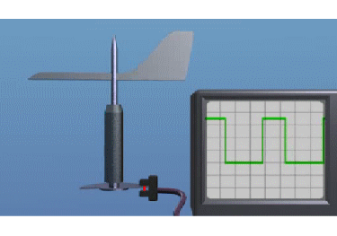

La dirección del viento es detectada con una veleta. Vea el siguiente vídeo para entender cómo funciona.

La señal generada por la veleta es una señal digital que presenta la medida de la desorientación de la góndola, es decir, de la diferencia entre la orientación de la góndola y la dirección del viento. Es una señal oscilante cuyo "ciclo de trabajo" ("duty cycle" en inglés) es la medida de esta diferencia de ángulos. El "ciclo de trabajo" de una señal periódica es la relación entre el tiempo en que la señal está en estado "On" respecto al periodo de dicha señal.
La veleta es un dispositivo que se comporta como un péndulo excitado por el viento en vez de por la gravedad. Como se puede apreciar en el video anterior, el detector fotoeléctrico recibe señal cuando el camino de su luz no es entorpecido por el semicirculo asociado a la veleta, lo cual depende del punto de oscilación de la misma y de su posición relativa respecto a su base, que está fija a la Góndola. El siguiente gráfico muestra 4 situaciones que ilustran estos conceptos.

El semicírculo opaco de la veleta está representado por el semicírculo rosa. El sector circular indica la zona de oscilación de la parte móvil de la veleta . En el primer caso (a la izquierda) la posición de la fuente de luz en la veleta no es entorpecida nunca: por ello la salida del sensor de la veleta está siempre excitado (linea negra). En el segundo caso, la oscilación de la veleta hace que durante un pequeña parte de la oscilación la luz de la veleta no llega al sensor, y tenemos una señal de salida que, en la mayor parte del tiempo, está excitada. En el tercero solo durante una pequeña parte del ciclo de oscilación el sensor recibe luz. En el cuarto caso, el sensor no recibe luz en ningún momento de la oscilación.
La "desorientación" de la Góndola respecto del viento viene dada por la diferencia entre el angulo medio sobre el que oscila la veleta, que es la del viento, y la dirección de la Góndola (la horizontal en la figura).
Como se ve cuando la señal de la veleta está siempre en On o en Off, la desorientación es mayor que el angulo de oscilación de la veleta (es decir, es grande). Cuando esta señal oscila entre On y Off, su "relación de aspecto" (duty cycle en inglés) permite medir con precisión la desorientación. Cuando la relación de aspecto es del 50%, la diferencia es 0º.
La medida de la desorientación mediante dispositivo requiere de un circuito que haga un tratamiento estadístico de estas tres situaciones (siempre en On, siempre en Off y oscilando), y, en el caso de que oscile, que haga una medida de su relación de aspecto.